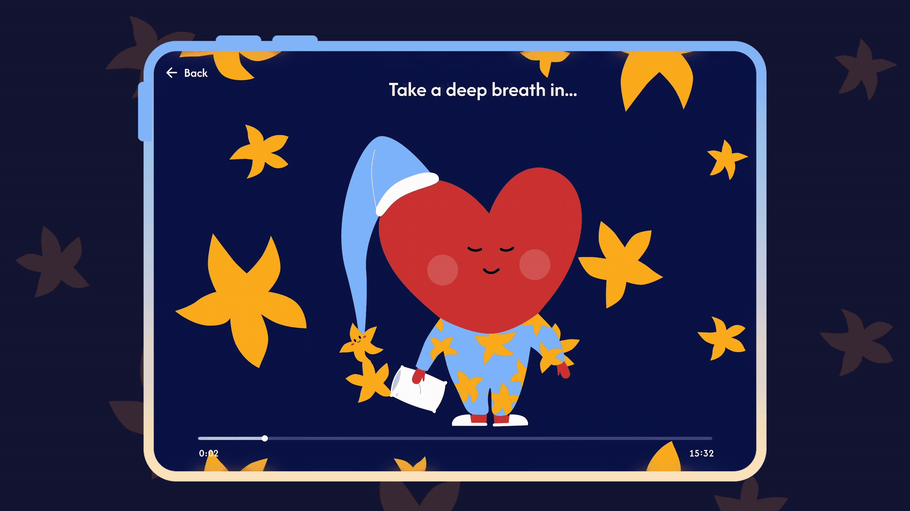

XUEFEI WANG
PRODUCT DESIGNER
Work
Builds
About
Negotiabbles
iF Design Award winner. Master life's negotiations.
Pretext Book
An interactive web textbook.
Hive.ai
Red Dot winner. Branding, guidelines and motion.

Heartie
Red Dot winner. A companion for kids with heart conditions.
Chase Against Time
An XR experience, built at a hackathon.
Builds
Things I've designed and built across award-winning concepts, visuals, flows, videos, illustrations, code, packaging, and more.
Layout — drag to place
Copy
Snap 10px
Toggle
· hold Alt = free
Builds
/
Drag
or
scroll
to move